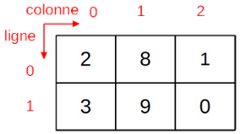

I. Le type tableau¶
Cours¶
Les types de bases manipulés jusqu'à présent ne permettent pas de manipuler des ensembles de valeurs, appelés en informatique des collections. Pour stocker des éléments d'un même type, on peut utiliser un tableau.
A. Définition¶
Un tableau est une collection d'éléments de même type, de taille fixée, stockés les uns à la suite des autres, dont la valeur est accessible grâce à leur indice.
En Python, on utilise le terme plus général de liste pour représenter des tableaux.
B. Création¶
On déclare un nouveau tableau en séparant ses éléments par des virgules, l'ensemble étant entouré de crochets. [] est un tableau vide.
Exemple
Pour stocker l'ensemble des nombres premiers inférieurs à 10, on peut utiliser un tableau appelé ici tab_premiers :
tab_premiers = [2, 3, 5, 7]
tab_premiers :
Solution
C. Indexation¶
Les éléments d'un tableau tab sont indexés à partir de 0, jusqu'à la taille du tableau - 1 (en Python : len(tab)-1). On accède à l'élément d'indice i avec la syntaxe tab[i].
Exemple :
Pour l'exemple de tab_premiers, associer chaque élément du tableau à son indice. Vérifier que l'indice du dernier élément correspond à len(tab_premiers)-1.
| élément | indice |
|---|---|
| 2 | |
| 3 | |
| 5 | |
| 7 |
Solution
| élément | indice |
|---|---|
| 2 | 0 |
| 3 | 1 |
| 5 | 2 |
| 7 | 3 |
On a bien len(tab_premiers)-1 = 4-1 = 3, indice du dernier élément de tab_premiers. |
Quelle instruction permet d'afficher la valeur 3 ? La valeur de l'élement d'indice 2 ?
Solution
tab[1] affiche la valeur 3.
tab[2] affiche la valeur de l'élément d'indice2`.
Comment afficher successivement la valeur des éléments de tab_premiers, avec une boucle ?
Solution
for i in range(len(tab_premiers)):
print(tab_premiers[i])
D. Modification¶
Il est possible de modifier la valeur d'un élément d'un tableau t après sa création, en lui affectant une nouvelle valeur avec la syntaxe t[i] = v.
Exemples
- Une erreur a été faite lors de la déclaration de
tab_premiers:tab_premiers = [1, 3, 5, 7]
Ecrire l'instruction permettant de rectifier cette erreur.
tab_premiers[0] = 2
- Un tableau
tde taille 10 a été initialisé avec uniquement des0. On veut en fait qu'il contienne l'ensemble des chiffres de 0 à 9.
Ecrire une boucle permettant de modifier les valeurs de t.
for i in range(len(t)):
t[i] = i
E. Création par compréhension¶
Pour créer des tableaux dont la taille peut être grande de manière automatique, on peut utiliser la création par compréhension. Cette méthode utilise une boucle et peut aussi intégrer une condition.
Exemples
t1 = [2**i for i in range(6)]crée un tableau avec les puissances de2de0à5. C'est-à-diret1vaut ...
Solution
t1 vaut [1, 2, 4, 8, 16].
- Indiquer ce que contient
t2:t2 = [i+5 for i in range(5)]
Solution
t2 vaut [5, 6, 7, 8, 9].
- Créer un tableau
t3par compréhension stockant les valeurs au carré des nombres de1à5.
Solution
t3 = [i**2 for i in range(1,6)]
- Indiquer ce que contient
t4:t4 = [i for i in range(10) if i%2 == 0]
Solution
t4 vaut [0, 2, 4, 6, 8].
F. Les tableaux à 2-dimensions¶
Un tableau à deux dimensions, appelé matrice, est un tableau dont chaque élément est aussi un tableau. On accède à un élément par son numéro de ligne i et son numéro de colonne j : si elle s'appelle mat, cela correspond à mat[i][j].
Exemple :
mat = [[2,8,1], [3,9,0]] a deux éléments, d'indice 0 et 1. Ces éléments comportent eux trois éléments.
- Compléter le tableau suivant :
| indice | élément |
|---|---|
| 0 | |
| 1 |
Solution
| indice | élément |
|---|---|
| 0 | [2,8,1] |
| 1 | [3,9,0] |
-
Le représenter sur le schéma suivant, et ajouter les numéros de ligne et de colonne :

Solution
 -
Quelle instruction permet d'accéder à l'élément
3? L'élément2?Solution
mat[1,0]permet d'accéder à3etmat[0,0]à2.
Exercices sur les tableaux¶
Exercice 1 : (sur feuille)¶
Qu'affiche le programme suivant ?
t = ["un", "trois", "deux"]
print(t[1], t[2])
Exercice 2 : (sur feuille)¶
Comment accéder sans erreur au 5ème élément d'un tableau t dont on ne connaît pas encore la taille ?
# proposition a
a = t[5]
# proposition b
if len(t) > 4:
a = t[4]
# proposition c
if len(t) >= 5:
a = t[4]
# proposition d
if len(t) > 4:
a = t[5]
# proposition e
if len(t) == 5:
a = t[4]
# proposition f
a = t[4]
Exercice 3 : les jours (sur ordinateur)¶
-
Ecrire une instruction Python stockant le nom des sept jours de la semaine dans un tableau nommé
jours. -
Ecrire un programme permettant d'afficher le noms des sept jours, en utilisant une boucle et la fonction renvoyant la longueur(taille) d'un tableau.
Exercice 4 : multiples (sur ordinateur)¶
-
Ecrire une fonction
multiples10prenant en paramètre un entier positifnet renvoyant un tableau contenant les 10 premiers multiples non nuls den. -
Ecrire une fonction
multiples1000prenant en paramètre un entier positifnet renvoyant un tableau contenant les multiples denstrictement inférieurs à 1000.
Exercice 5 : morpion (sur ordinateur)¶
-
Ecrire une instruction permettant de générer le tableau à 2 dimensions représentant le jeu du morpion ci-dessous.

-
C'est au joueur ayant les
'X'de jouer. Ecrire l'instruction qui lui permet de gagner (il faut qu'il aligne 3'X'!).
Exercice 6 : la compréhension (sur ordinateur)¶
-
Ecrire une instruction permettant de créer par compréhension la table de multiplication de 6 (donc les valeurs allant de
1*6à9*6). -
Ecrire une instruction permettant de créer par compréhension les tables de multiplication de tous les chiffres de 2 à 9. Toutes les tables sont stockées dans une seule matrice :
[[2, 4, 6, 8, 10, 12, 14, 16, 18], # table de 2
[3, 6, 9, 12, 15, 18, 21, 24, 27], # table de 3
... # etc
[9, 18, 27, 36, 45, 54, 63, 72, 81]] # table de 9
```
### Exercice 7 : ajouter des éléments à un tableau *(sur ordinateur)*
Un tableau est une structure de **taille fixe**. Dans certains cas, ce n'est pas pratique car on veut pouvoir rajouter des éléments au fur et à mesure. Il faut pour cela utiliser des **tableaux dynamiques** : des tableaux dont la taille varie.
Le type `list` de Python implémente cette structure. On peut appliquer des fonctions un peu spéciales, appelées *méthodes*, comme la fonction `append` qui ajoute un élément à la fin de la liste Python.
1. Exécuter le code suivant :
```python
t = [-1, 0, 1, 2]
t.append(3) # noter qu'on ne l'appelle pas comme une fonction usuelle!
t après son exécution ?
-
Ecrire un programme créant un tableau vide, et ajoutant successivement les valeurs
5,10,15et20. -
Il est possible de faire la même chose, mais avec l'opérateur
+. Exécuter le code suivant, et vérifier que l'on obtient la même chose que pour la question 1 :t = [-1, 0, 1, 2] t = t + [3] - Ecrire un programme faisant la même chose que celui de la question 2, mais en utilisant l'opérateur
+à la place deappend.